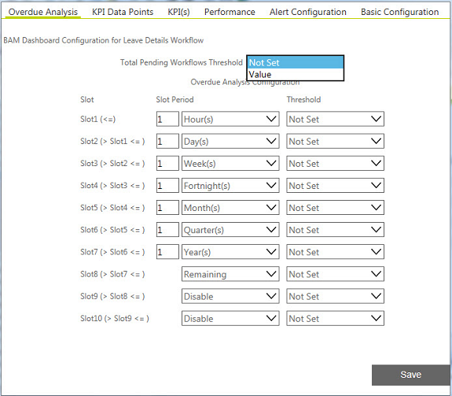

No
Overdue Analysis
You can use the Overdue Analysis tab to setup the threshold for total pending workflow instances at any time and for selected time slots.

Total Pending Workflows Threshold: Select Value to set a limit on the total workflows that may be pending at any time.
Overdue Analysis Configuration
Overdue workflows may be analyzed in 10 time slots.
- Slot Period: Select the time period for defining threshold values in each slot.
- Threshold: Select the threshold option.
- Not Set: This indicates there is no threshold.
- Value: Select this option and enter a threshold value for the number of pending workflows in the time slot.
- % of Total: Select this option to enter the threshold of pending workflows as a percentage of total active workflows in the time slot.
- Click Save.